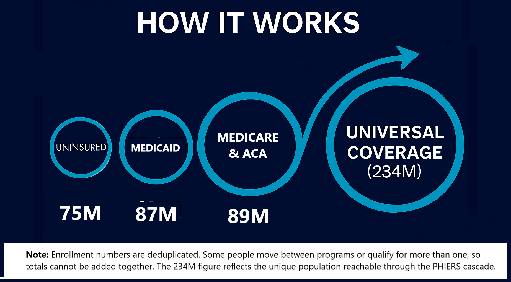
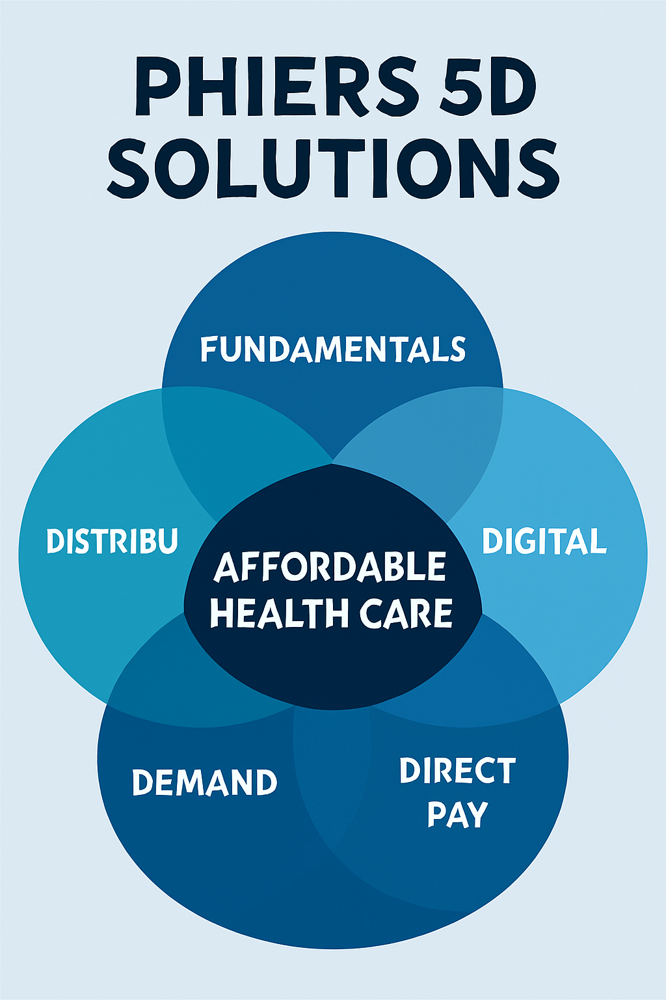
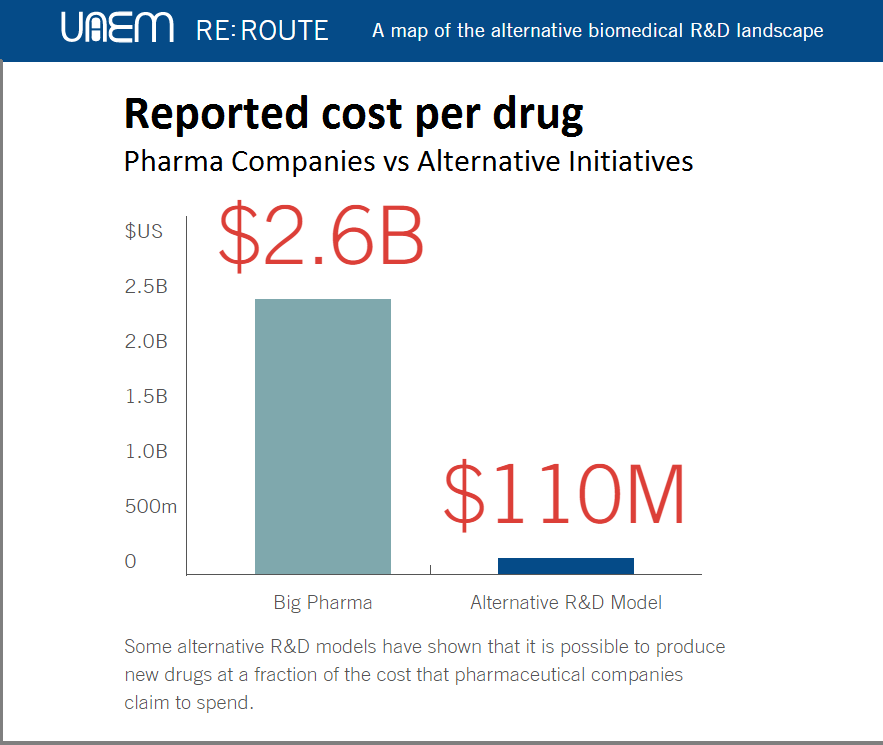

Congress keeps patching symptoms. One bill here. One program there. That's why nothing changes. PHIERS fixes the system that creates them.
One movement. Five interconnected solutions. Zero wasted motion.

Why Congress Can't Ignore PHIERS (3:33)
The exponential cascade that makes universal coverage inevitable.
Congress patches problems. One bill here. One program there. That's why nothing changes.
PHIERS solves all five crises simultaneously.
Healthcare crisis → unlocks jobs → unlocks safety net → unlocks opportunity → unlocks guardrails. Each dimension reinforces the others.
This isn't a policy list. This is survival architecture.
And it starts with one domino.
Telehealth already delivers:
Congress could authorize $600 of telehealth coverage right now — instantly lowering costs for millions.
They refuse to.
So we're forcing the issue.
Once telehealth is authorized, everything else becomes possible.
This is why Congress is terrified:
Fix healthcare → unlock jobs → unlock safety net → unlock opportunity → unlock guardrails.
No new taxes. No new bureaucracy. Just one domino falling forward.
We're not here to beg Congress for scraps. We're here to force the only intelligent, interconnected, minimum-wasted-motion plan that solves multiple national crises at once.
These aren't random policies. These are five dimensions of the same solution — each one unlocking the next, each one reinforcing the others.
This is the 5D Blueprint for a stable, healthy, prosperous America.
The first domino. The fastest fix. The ignition point.
Congress must authorize $600 of telehealth coverage for every American, immediately.
Why? Because telehealth is cheaper, faster, more accessible, less bureaucratic, less corruptible, and already working.
This is the entry point to universal care — not in theory, but in practice.
Once telehealth is authorized, the entire 5D cascade becomes possible. This is the lever.
Telehealth is the on-ramp. Universal care is the destination.
Once everyone has access to basic care, the cost of full coverage drops dramatically.
Universal healthcare is no longer a 10-year dream. It becomes an 8–13 month inevitability.
This isn't ideology. It's math. And it's the foundation for everything that comes next.
Funded by the $2.73 trillion we're already wasting.
The $2.73T isn't "new spending." It's the money we're already losing to administrative waste, denials, inflated drug prices, middlemen, profit extraction, and inefficiency baked into the system.
We're not asking Congress to raise taxes. We're asking them to stop burning money and redirect the savings into:
This is how we stabilize people — permanently.
Stability creates capacity. Capacity creates opportunity.
When people have healthcare, income stability, and breathing room, they can retrain, relocate, start businesses, fill essential roles, and build new industries.
This is how we create millions of jobs that automation can't erase. This is how we rebuild the middle class.
Economic stability is political stability.
When people are healthy, housed, fed, stable, and secure, they are harder to manipulate, harder to divide, harder to radicalize, and harder to control.
Economic stability is the strongest defense against authoritarian drift.
This is how we protect democracy — not with speeches, but with material stability.

Fundamentals • Distribution • Digital • Demand • Direct Pay → Affordable Healthcare
Self-reinforcing progress — the opposite of the downward spiral we're in now.
This is the soul of the movement.
Once healthcare stops draining people, employers, and government budgets, the savings become the fuel for economic stability, entrepreneurship, resilience, and dignity.

Academic labs develop drugs at 1/24th the cost. Big Pharma just charges more.
This isn't charity. It's returning the value we're already creating.
We're not asking for miracles. We're following the math.
This forces Congress to authorize the telehealth cascade.
Once authorized, the cascade grows automatically:
This is how systems scale.
Not because of hope. Because of math.
Independence Day becomes the day America becomes independent from corporate healthcare.
That's the arc. That's the meaning. That's the movement.
The cascade starts when you act:
Sign → Force Telehealth → Trigger 5D Cascade → 234M Covered → System Fixed
This is survival math. And it starts with you.